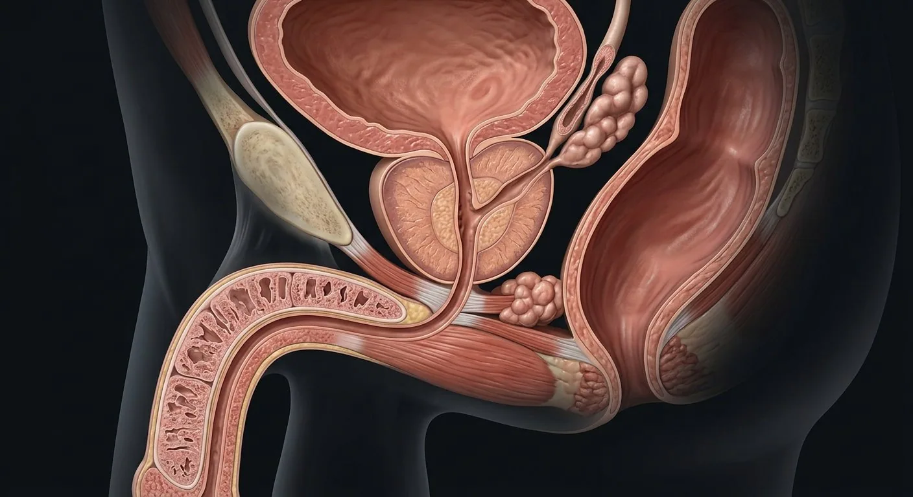

Bladder neck / internal sphincterAnterior fibromuscular stromaProstatic capsuleInferior vesical arterial branchesCorpora cavernosaSpongy urethraCorpus spongiosumSeminal vesiclesProstatic central zoneProstatic transition zoneEjaculatory ductsRectal relationProstatic ductsProstatic urethraProstatic neurovascular bundleProstatic peripheral zoneSeminal colliculus (verumontanum)Prostatic venous plexusExternal urethral sphincterBulbourethral glandsPudendal nerve & perineal branches- 01Bladder neck / internal sphincter
- 02Prostatic transition zone
- 03Prostatic peripheral zone
- 04Prostatic central zone
- 05Prostatic urethra
- 06Seminal colliculus (verumontanum)
- 07Ejaculatory ducts
- 08Seminal vesicles
- 09Bulbourethral glands
- 10External urethral sphincter
- 11Rectal relation
- 12Corpora cavernosa
- 13Corpus spongiosum
- 14Spongy urethra
- 15Pudendal nerve & perineal branches
- 16Prostatic capsule
- 17Anterior fibromuscular stroma
- 18Prostatic ducts
- 19Prostatic neurovascular bundle
- 20Prostatic venous plexus
- 21Inferior vesical arterial branches
How this part of the body works
A sagittal regional cut clarifies zones, bladder neck, ejaculatory duct entry and the urethral path through prostate and penis.
Read the anatomy, part by part
These 21 structures describe anatomy related to the chapter’s regional illustration. Each entry separates location, function and a clinical point.
Bladder neck / internal sphincter
Smooth-muscle outlet superior to prostate.
What it doesCloses during emission to limit retrograde ejaculation.
Clinical connectionBladder-neck dysfunction may affect voiding.
Prostatic transition zone
Zone surrounding proximal prostatic urethra.
What it doesContains glandular ducts and fibromuscular tissue.
Clinical connectionCommon origin of benign prostatic enlargement.
Prostatic peripheral zone
Posterior-lateral zone palpable through rectum.
What it doesProduces prostatic secretions.
Clinical connectionMost prostatic cancers arise in this zone.
Prostatic central zone
Tissue surrounding ejaculatory ducts.
What it doesSecretory prostatic gland region.
Clinical connectionLess frequently a primary site of carcinoma.
Prostatic urethra
Urethra through prostate from bladder neck to membrane.
What it doesConducts urine and semen in separate phases.
Clinical connectionEnlarged transition zone may narrow it.
Seminal colliculus (verumontanum)
Ridge in posterior prostatic urethra with duct openings.
What it doesLandmark for ejaculatory duct openings.
Clinical connectionA key transurethral surgical landmark.
Ejaculatory ducts
Union of vas ampulla and seminal vesicle duct traverses prostate.
What it doesDeliver sperm and vesicle secretion to urethra.
Clinical connectionObstruction can cause low ejaculate volume.
Seminal vesicles
Paired folded glands posterior to bladder.
What it doesContribute fructose-rich alkaline semen fluid.
Clinical connectionDo not store sperm; they produce fluid.
Bulbourethral glands
Small paired glands posterolateral to membranous urethra.
What it doesSecrete mucus into proximal spongy urethra.
Clinical connectionDucts open into bulbar urethra.
External urethral sphincter
Striated sphincter around membranous urethra.
What it doesVoluntary urinary continence.
Clinical connectionMay be affected during prostate surgery.
Rectal relation
Rectum lies posterior to prostate.
What it doesAllows posterior prostate palpation by rectal examination.
Clinical connectionRectal wall is an anatomic boundary in pelvic surgery.
Corpora cavernosa
Paired dorsal erectile cylinders.
What it doesEngorge with blood during erection.
Clinical connectionCavernosal smooth muscle is autonomically regulated.
Corpus spongiosum
Ventral erectile tissue around spongy urethra.
What it doesKeeps urethra patent during erection.
Clinical connectionEnds in the glans distally.
Spongy urethra
Urethra within corpus spongiosum.
What it doesConduit for urine and ejaculate.
Clinical connectionUrethral injury depends on pelvic trauma pattern.
Pudendal nerve & perineal branches
Somatic S2–S4 branches supply perineal skin and sphincters.
What it doesVoluntary motor control and genital sensation.
Clinical connectionDistinguish from autonomic cavernous nerves.
Prostatic capsule
Fibromuscular covering closely investing the gland.
What it doesContains glandular tissue and separates outer surgical planes.
Clinical connectionExtra-capsular spread changes cancer staging.
Anterior fibromuscular stroma
Non-glandular anterior component of prostate rich in muscle and connective tissue.
What it doesProvides structural support to prostatic urethra.
Clinical connectionDistinct from gland-bearing peripheral and transition zones.
Prostatic ducts
Small ducts from prostatic acini opening mainly into prostatic sinuses.
What it doesConvey prostatic fluid into urethra.
Clinical connectionInflammation may involve duct openings.
Prostatic neurovascular bundle
Pelvic autonomic fibers and vessels along posterolateral prostate.
What it doesCarries cavernous nerves important for erection.
Clinical connectionMay be at risk during radical prostatectomy.
Prostatic venous plexus
Veins around capsule, communicating with deep dorsal penile and vesical veins.
What it doesDrain gland and adjacent bladder neck.
Clinical connectionPelvic venous channels may bleed during surgery.
Inferior vesical arterial branches
Variable internal iliac-derived vessels supplying male bladder base and prostate.
What it doesDeliver blood to prostatic parenchyma.
Clinical connectionBranching pattern varies among patients.
Five questions about Prostate, ducts & penis
Short answers grounded in the structures described above. Use the illustrated guide for anatomical context.
Where is the prostate located?
The prostate sits below the bladder and surrounds the first part of the urethra. Ducts from the reproductive tract open into the prostatic urethra.
What are the main anatomical zones of the prostate?
The transition, central and peripheral zones differ in location and surrounding structures. The peripheral zone occupies much of the posterior gland.
What is the bladder neck / internal sphincter?
Smooth-muscle outlet superior to prostate. Function: Closes during emission to limit retrograde ejaculation.
Where is the prostatic peripheral zone located?
Posterior-lateral zone palpable through rectum. Function: Produces prostatic secretions.
What is the function of the prostatic urethra?
Function: Conducts urine and semen in separate phases. Urethra through prostate from bladder neck to membrane.
Related anatomy guides
Follow these connected structures and body systems in the illustrated atlas.
 Penile erectile tissueTwo dorsal cavernous bodies and one ventral spongiosum carry arterial, neural and urethral pathways through the penis.↗
Penile erectile tissueTwo dorsal cavernous bodies and one ventral spongiosum carry arterial, neural and urethral pathways through the penis.↗ Male reproductive systemSperm production in the scrotum, maturation in the epididymis, and a shared exit with urine.↗
Male reproductive systemSperm production in the scrotum, maturation in the epididymis, and a shared exit with urine.↗ Testis & epididymis — microanatomyThe sperm-production organ from tunica through seminiferous tubule to rete, efferent ducts and epididymal tail.↗
Testis & epididymis — microanatomyThe sperm-production organ from tunica through seminiferous tubule to rete, efferent ducts and epididymal tail.↗ Male pelvis & perineumThe male pelvic floor in sagittal section: bladder, prostate and urethra in front, rectum and anal canal behind, and the muscular sheet that holds them up.↗
Male pelvis & perineumThe male pelvic floor in sagittal section: bladder, prostate and urethra in front, rectum and anal canal behind, and the muscular sheet that holds them up.↗Further reading
General anatomy references and related source chapters for continued study. These links do not make the digital illustrations clinical images or certify every anatomical variant.
This educational page is not medical advice and has not undergone formal clinical peer review. Spotted an error? Contact the editor.
Open the realistic interactive plate, label lines, focus view and self-test.